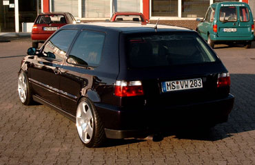

Extras
- metallic Lackierung
- Servolenkung, ABS
- getönte Scheiben
- Sportsitze beheizt
- MFA
- el. FH, SSD
Motor
- 4 Zylinder / 1781 ccm
- Kopf bearbeitet
- große Auslassventile
- 278° Nockenwelle
- Chiptuning
- offener K&N Luftfilter
Abgasanlage
- Remus ab Kat mit Endtopf in Titan-Optik
Bremse
- VA Power-Disk, HA Serie
Felgen / Reifen
- polierte Parabol vom Audi TT in 7,5 x 17 ET 12
- Toyo Proxis 205 / 40 - ZR17
Fahrwerk
- FK-Gewinde
- 20mm Adapterplatten 4 / 100 auf 5 / 100
- polierte Domstrebe VA
Sonstige Umbauten
Außen
- Neulack Frühjahr 2003
- Radläufe gebördelt und gezogen
- Scheinwerfer Golf IV Optik mit Blinker
- no-sign-Grill mit verchromter Blechleiste
- komplett gecleante Stoßstangen (Blinker, Nebelscheinwerfer, Sicken
etc.) mit VR6 Spoilerlippe
- Blinker aus den Kotflügeln entfernt
- verchromter Einarmwischer
- M3 Spiegel
- Chromolux-Folie und div. Scheibengravuren
- 16V Antenne
- "verkleinerte" rot/weiße Rückleuchten in Klarglas
- gecleante Heckklappe mit den entsprechenden Änderungen für
die geänderten Rückleuchten
Innen
- 30er Raid Lenkrad in Wagenfarbe
- Blaue Tachobeleuchtung
- Alu / Chrom im Cockpitt
Motorraum
- polierter Ventildeckel, Lichtmaschine + Halter,
Musikanlage
- JVC KDSH 77 R
- Axton C402
- Em-Phaser EA 2350
- MA 2-Wege-System
- Axton Soundboard 4 x 20 cm Woofer
- Radical Audio 38er Bandbasskiste
- Zealum 1,2 Farad Powercap
Kontakt
monty@vwclubms.de